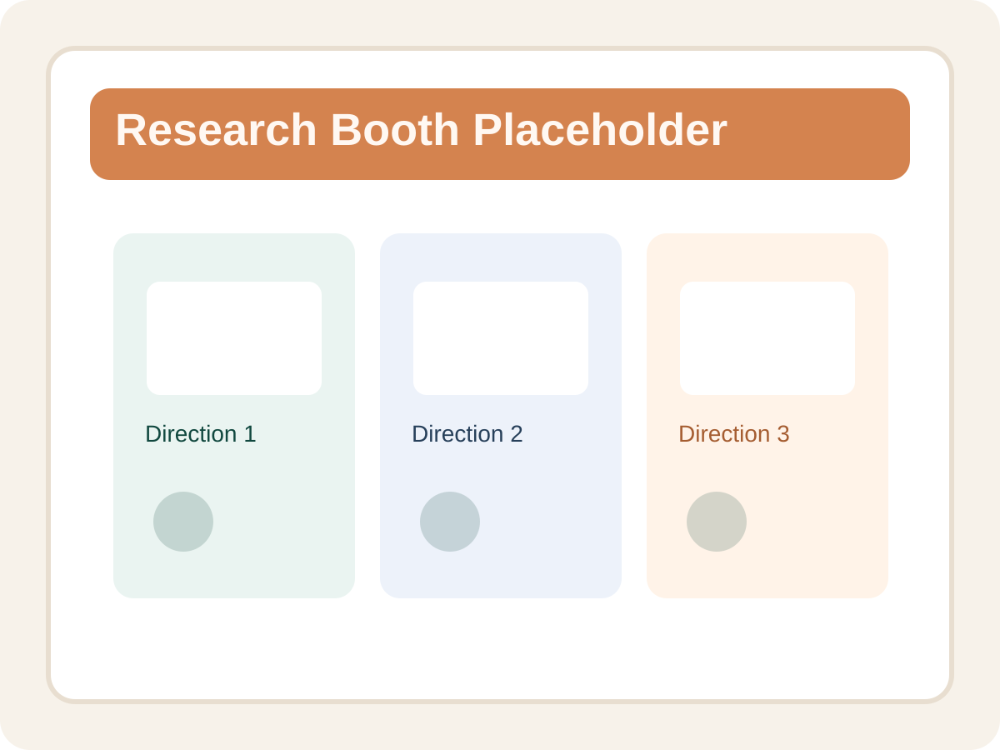

德育模型面向教育场景中的价值引导、案例理解与德育内容分析。 当前页面作为统一风格的中转展示页，便于用户在 Mind Lab 网站内先理解产品定位， 再进入实际系统继续使用。

建议后续在这里替换为德育模型的真实系统截图、案例流程图或使用场景示意图。
适合用于德育案例理解、场景分析、教育内容辅助研判与价值导向表达等任务。
面向教师、教研人员、课程设计者以及关注教育场景智能分析的研究团队。
当前通过中转页方式接入，点击按钮后将跳转至外部正式系统页面继续使用。
1. 先阅读本页对产品的功能说明与使用场景介绍。
2. 点击“进入系统”按钮后，会在新标签页打开外部德育模型平台。
3. 若后续获得接口信息，可再进一步接入为站内可交互版本。